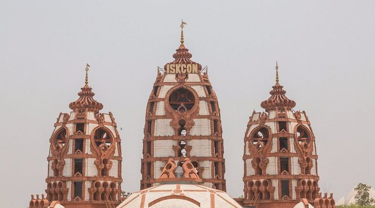
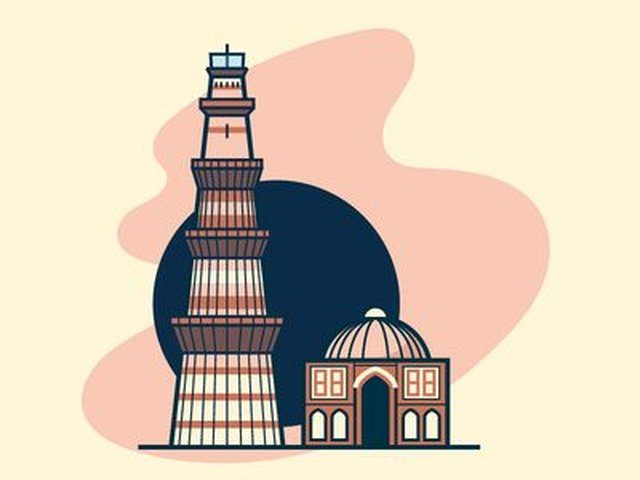
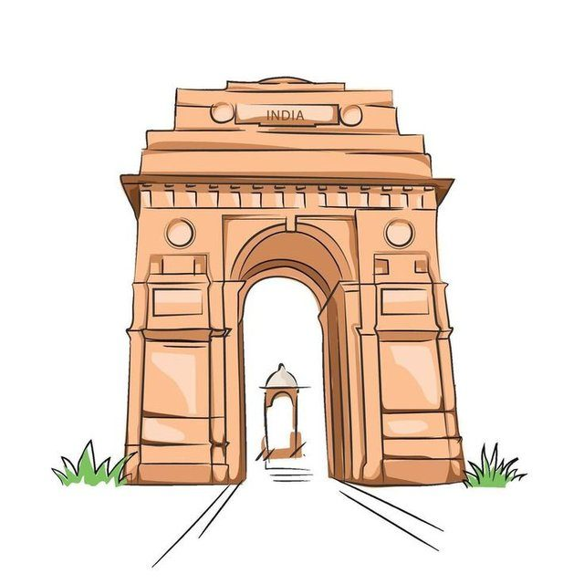
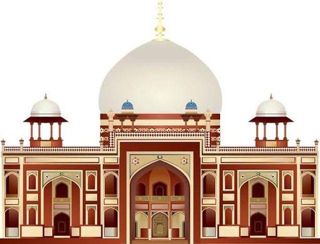
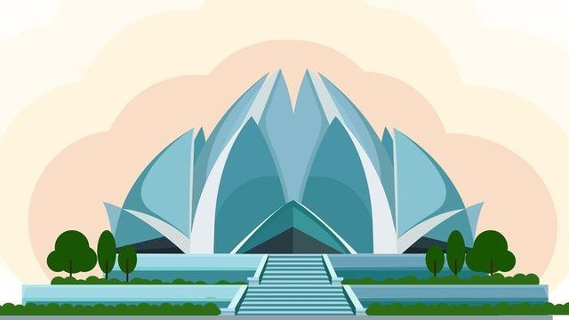
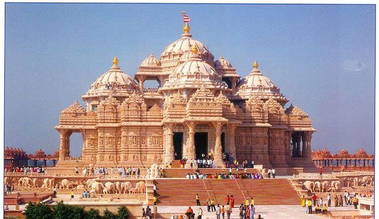

Coming in from outside Delhi? A few places worth carving out time for.

The closest attraction to campus — a modern, uncrowded Krishna temple, well suited to a short evening visit between sessions.
Formally the Sri Sri Rukmini Dwarkadhish Temple, this ISKCON centre opened in 2013 and is markedly quieter than the flagship ISKCON temple in East of Kailash — a good option if you'd rather avoid a crowd. The complex is wheelchair accessible and includes a small prasadam counter.

Delhi's tallest minaret, set within a sprawling complex of 12th-century ruins, carved gateways, and the famous rust-resistant Iron Pillar.
The 73-metre minaret was begun in 1192 and is the tallest brick minaret in the world. Beyond the tower itself, the surrounding complex rewards a slow walk — look out for the Alai Darwaza gateway, the unfinished Alai Minar, and the Quwwat-ul-Islam Mosque. Weekday mornings are noticeably quieter than weekends.

A 42-metre war memorial at the heart of Lutyens' Delhi — especially striking at dusk, when it's lit up and the lawns fill with visitors.
Designed by Edwin Lutyens and completed in 1931, India Gate commemorates soldiers of the British Indian Army. It anchors one end of Kartavya Path, a wide ceremonial boulevard that's popular for evening walks, ice cream vendors, and boat rides on the adjoining canal basin.

A Mughal garden-tomb from 1570 that is widely considered a precursor to the Taj Mahal — red sandstone, white marble, and Persian-style gardens.
Commissioned in 1570 by Empress Bega Begum for her husband Emperor Humayun, this was the first grand dynastic mausoleum of the Mughal era and introduced the charbagh (four-part garden) layout to India. The grounds are spacious and considerably less crowded than the Taj Mahal it went on to inspire.

A Bahá'í house of worship shaped like a blooming lotus, open to all faiths, with a quiet meditation hall and landscaped grounds.
Completed in 1986, the temple is built from 27 free-standing marble "petals" and has no religious imagery inside — it's open to people of every faith for quiet reflection. Shoes are checked in at the entrance, and the grounds include several reflecting pools.

A vast temple complex known for its intricate stone carving, gardens, and evening musical fountain show. Bags and phones aren't permitted inside.
Opened in 2005, the complex covers over 100 acres and showcases traditional Hindu temple architecture and craftsmanship in stone. Security is strict — visitors must leave bags, cameras, and phones at a cloakroom outside — but the evening fountain show is worth timing your visit around.